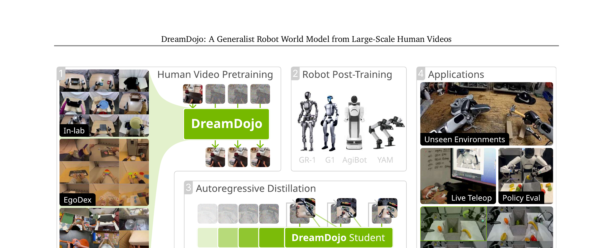
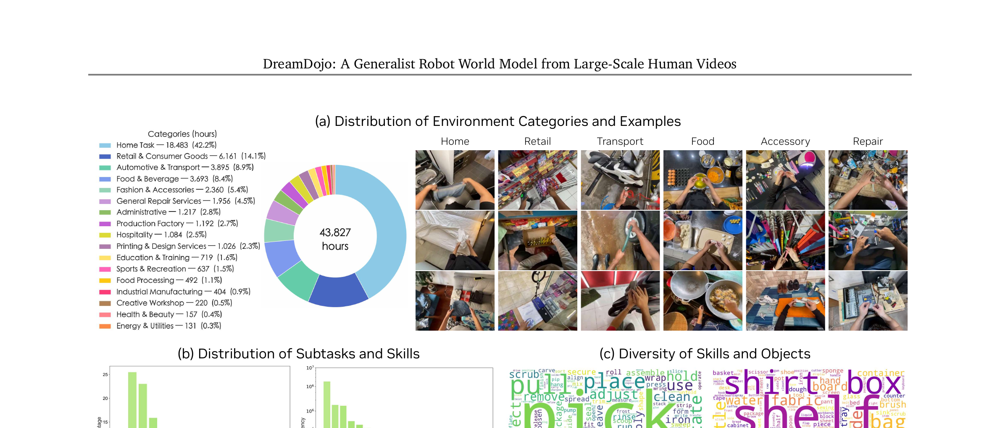
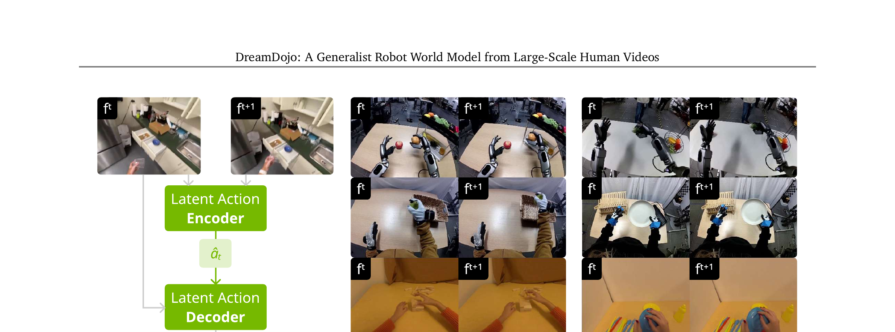
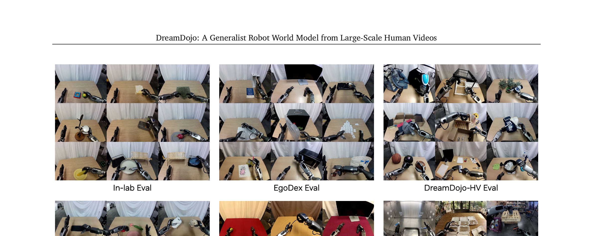
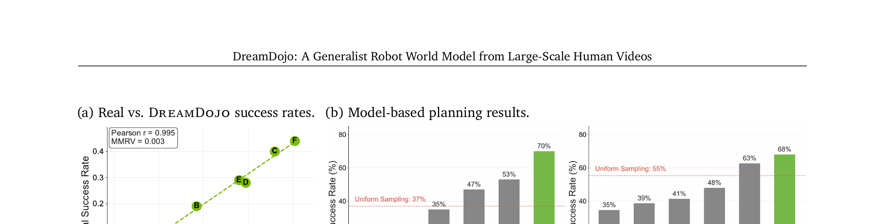
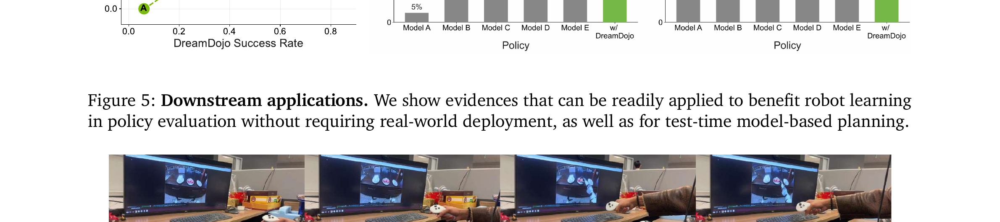

DreamDojo: A Generalist Robot World Model from Large-Scale Human Videos
论文定位：机器人世界模型的"基础模型化"尝试
DreamDojo 是第一个在 44k 小时人类视频上预训练、用潜在动作作为统一代理标签、支持实时自回归预测的机器人世界模型——它能在看到新机器人少量演示后，立即泛化到从未见过的物体和环境，无需重新从头训练。
| 核心问题 | 机器人世界模型被限制在分布内场景：机器人数据太稀缺，覆盖不了真实世界的多样性 |
| 核心洞见 | 人类在日常活动中与世界的物理交互和机器人的底层物理是共通的——用人类视频预训练可以学到物理知识，再迁移到机器人 |
| 数据来源 | In-lab (55h) + EgoDex (829h) + DreamDojo-HV (43,827h) = 44,711 小时 |
| 架构基础 | Cosmos-Predict2.5（NVIDIA 的视频 Diffusion 模型），WAN2.2 Tokenizer，DiT 骨干 |
| 模型规模 | DreamDojo-2B 和 DreamDojo-14B 两个版本，256 张 H100 预训练 140k 步 |
| 实时速度 | 蒸馏后 10.81 FPS（640×480），推理步数从 35 → 4 |
| 关键应用 | 实时遥操作 · 策略评估 · 模型规划 · 零样本未见场景泛化 |
① DreamDojo-HV 数据集：44k 小时自我中心人类视频，比之前最大世界模型训练数据多 15 倍时长、96 倍技能种类、2,000 倍场景数量。
② 潜在动作（Continuous Latent Actions）：用 VAE 从视频帧中自监督提取动作代理标签，不需要任何外部捕捉设备，跨具身迁移。
③ 蒸馏 Pipeline（Self Forcing）：把双向 Diffusion 教师模型蒸馏成因果自回归学生模型，4 步去噪实现 10.81 FPS 实时推理，同时提升长时一致性。
④ 多样下游应用：策略评估与真实世界相关性 Pearson r=0.995，模型规划提升成功率约 2×。

阶段 ①：人类视频预训练（Pretraining from Human Videos）
在 44,711 小时自我中心人类视频上预训练。三路数据：In-lab + EgoDex + DreamDojo-HV，采样比 1:2:10。
输入是什么：相机图像或视频，加上任务指令和机器人当前状态。它们还是原始观测，模型尚未把它们变成可用于预测或控制的特征。
这一步究竟做什么：在 44,711 小时自我中心人类视频上预训练。三路数据：In-lab + EgoDex + DreamDojo-HV，采样比 1:2:10。
输出到哪里：参数得到更新的模型，或能供下一轮训练使用的新监督信号。这个结果会交给下一步“阶段 ②：目标机器人后训练（Post-Training on Target Robots）”继续处理。
为什么不能省略：前面的数据或分数本身不会自动改变模型；必须通过损失函数把误差信号变成参数更新。
关键设计：用潜在动作（latent actions）作为条件，而不是无动作预测（action-free）。潜在动作由 VAE 自监督提取，不需要动作标签，却保留了因果性，让模型学会"动作→未来状态"的因果关系。
Cosmos-Predict2.5 骨干，序列长度 13 帧，分辨率 640×480，140k 步训练。
阶段 ②：目标机器人后训练（Post-Training on Target Robots）
在目标机器人数据（GR-1/G1/AgiBot 等遥操作演示）上微调。重新初始化 Action MLP 第一层以适配新动作空间，其他权重沿用预训练模型。
输入是什么：来自上一步“阶段 ①：人类视频预训练（Pretraining from Human Videos）”的产物：参数得到更新的模型，或能供下一轮训练使用的新监督信号。本步骤还会按论文设置读取当前条件、时间步或训练信号。
这一步究竟做什么：在目标机器人数据（GR-1/G1/AgiBot 等遥操作演示）上微调。重新初始化 Action MLP 第一层以适配新动作空间，其他权重沿用预训练模型。
输出到哪里：一套固定且可复现的输入条件，后续所有模型都必须在这套条件下生成或行动。这个结果会交给下一步“阶段 ③：蒸馏（Distillation）”继续处理。
为什么不能省略：前面的数据或分数本身不会自动改变模型；必须通过损失函数把误差信号变成参数更新。
关键设计：动作以相对动作（relative action）形式输入——每次以当前 latent frame 起始帧的姿态为基准归一化，减小不同轨迹之间的分布差异，增强泛化。
128 张 H100，50k 步，batch size 512。后训练后即可零样本泛化到未见物体和场景。
阶段 ③：蒸馏（Distillation）
将教师模型（双向注意力，35 步去噪）蒸馏为学生模型（因果注意力，4 步去噪）。用 Self Forcing 两阶段范式：先 warmup（对齐教师 ODE 轨迹），再蒸馏（KL 分布匹配）。
输入是什么：来自上一步“阶段 ②：目标机器人后训练（Post-Training on Target Robots）”的产物：一套固定且可复现的输入条件，后续所有模型都必须在这套条件下生成或行动。本步骤还会按论文设置读取当前条件、时间步或训练信号。
这一步究竟做什么：将教师模型（双向注意力，35 步去噪）蒸馏为学生模型（因果注意力，4 步去噪）。用 Self Forcing 两阶段范式：先 warmup（对齐教师 ODE 轨迹），再蒸馏（KL 分布匹配）。
输出到哪里：参数得到更新的模型，或能供下一轮训练使用的新监督信号。这是图中这条链路的最终产物，随后会进入真实执行、模型更新或指标评测。
为什么不能省略：前面的数据或分数本身不会自动改变模型；必须通过损失函数把误差信号变成参数更新。
学生模型自回归生成：上下文窗口 12 帧（≫ 教师的 1 帧），天然抵抗遮挡和视角变化。推理速度 10.81 FPS，支持实时遥操作和在线规划。
64 张 H100，warmup 10k 步 + 蒸馏 3k 步。
背景：Video World Model 卡在了哪里？
§01 说 DreamDojo 要做"通用机器人世界模型"——但为什么之前的世界模型不够通用？这一节讲清楚两个核心瓶颈：数据分布太窄和动作标签太稀缺。
什么是世界模型？
世界模型（world model）的目标：给定当前状态 $s_t$ 和动作 $a_t$，预测下一个状态 $s_{t+1}$。形式化为状态转移采样：
- $s_t$
- 当前状态——这里是视频帧（或视频 latent）。不是关节角度，而是像素级观测。
- $a_t$
- 动作——机器人关节速度/力矩命令，或者潜在动作向量（无标注场景）。
- $s_{t+1}$
- 预测的下一帧。好的世界模型能预测出物理上合理的、动作一致的未来视频。
- 为什么是"采样"而不是"预测"？
- 世界的未来本身具有随机性（物体落点、环境扰动），用概率分布建模比确定性预测更合理。
现有世界模型的两大卡点
HaMeR（Pavlakos et al., 2024）等工具能从视频提取手部姿态，但：① 只能表示手，无法表示手臂/身体/相机运动；② 重度遮挡时精度下降；③ 聚焦低层次手部特征，和机器人末端执行器之间仍有具身差异（embodiment gap）。DreamDojo 提出不依赖任何外部捕捉设备的潜在动作方案。
展开原文 · 关于 action-free 预训练的局限
"Naively training on passive videos overlooks the causality between video observations and actions, leading to inferior knowledge transfer for action-conditioned world simulation. Moreover, converting various action formats into a unified one entails inevitable engineering effort."
DreamDojo-HV 数据集：史上最大人类交互视频
§03 说清了"为什么需要大规模人类视频"。这一节具体看：DreamDojo-HV 怎么搭建，三路数据各自贡献什么，规模和多样性达到什么水平。

三路数据来源对比
预训练时三路数据的采样比为 In-lab : EgoDex : DreamDojo-HV = 1 : 2 : 10。这个比例设计不是按时长等比，而是适度上调精准但小规模的 In-lab 和 EgoDex，防止被 DreamDojo-HV 的巨大体量完全淹没。类比 NLP 预训练中对高质量数据的过采样策略。
潜在动作模型：无标注视频的"自监督动作提取"
§04 建好了数据基础，但有个问题：44k 小时视频没有动作标注。如果只做无动作的被动预测，模型学不到因果性（§02 讲过）。这一节介绍解决方案：用 VAE 信息瓶颈从视频帧对中自监督提取"潜在动作"。
核心思路类比一道谜题：给你相邻两帧图像 $f^t$ 和 $f^{t+1}$，请找出使两者之间发生变化的"最简解释"。这个最简解释就是潜在动作 $\hat{a}_t$。 信息瓶颈（Information Bottleneck）强制 $\hat{a}_t$ 只保留真正重要的变化信息，丢弃背景噪声。

VAE 训练目标（Eq. 3）
整个 VAE 用重建损失 + KL 散度联合训练，优化以下目标：
- $q_\phi(\hat{a} | f^{t:t+1})$
- 编码器分布：给定帧对 $(f^t, f^{t+1})$，输出潜在动作分布（均值+方差）。参数为 $\phi$。
- $\mathbb{E}_{q_\phi} \log p_\theta(f^{t+1} | \hat{a}, f^t)$
- 重建损失：解码器用 $(f^t, \hat{a})$ 重建 $f^{t+1}$ 的对数似然。训练信号来源：能不能从"上一帧+动作"精确重建下一帧。
- $\beta \, D_{KL}(q_\phi \| p(\hat{a}))$
- 正则项：让潜在动作分布接近标准高斯先验 $p(\hat{a})=\mathcal{N}(0,I)$。$\beta=10^{-6}$ 非常小，说明信息瓶颈约束很弱——目的是让 $\hat{a}$ 尽量保留丰富的动作信息，只去掉冗余噪声。
- 为什么用 VAE 而不是 AE？
- VAE 输出连续分布（可采样），便于后续在世界模型中作为条件注入；且 KL 散度提供了轻量正则，防止潜在空间不连续。
展开原文 · 关于潜在动作的跨具身优势
"In egocentric human videos, we found that this embedding particularly captures the human actions and can be transferred across embodiments (see Fig. 3). Ultimately, we are able to utilize latent actions as unified proxy labels for world models."
VLA（如 π₀）在推理时直接输出机器人关节动作；DreamDojo 的潜在动作则是学习阶段的代理标签，不是真实关节命令。但两者都面对"跨具身"的挑战：π₀ 用 Action Expert 适配，DreamDojo 用 latent action 统一——思路相似，各有侧重。
Foundation World Model：架构设计与训练目标
§05 解决了"怎么给无标注视频提供动作条件"。这一节看 DreamDojo 的主体模型怎么设计——基于 Cosmos-Predict2.5 骨干，两个关键架构改进：相对动作变换和分块动作注入，以及新的时序一致性损失。
骨干：Cosmos-Predict2.5
DreamDojo 以 Cosmos-Predict2.5 为骨干——NVIDIA 的视频 Latent Diffusion 模型，在 WAN2.2 Tokenizer 的连续 latent 空间中操作。架构是 DiT，文本条件通过交叉注意力层注入，时间步信息通过 AdaLN 调制。训练目标是 Flow Matching：
- $\mathbf{u}(\mathbf{x}_t, t, \mathbf{c};\theta)$
- 模型预测的速度场（velocity field）：在时间 $t$、噪声状态 $\mathbf{x}_t$、条件 $\mathbf{c}$ 下，模型预测"应该往哪个方向走"。
- $\mathbf{v}_t = \boldsymbol{\epsilon} - \mathbf{x}$
- 真实速度：从噪声 $\boldsymbol{\epsilon}$ 走向干净样本 $\mathbf{x}$ 的方向（线性路径）。
- $\mathbf{c}$
- 条件信息：文本描述、条件帧（初始帧）、动作（这是 DreamDojo 添加的部分）。
- Flow Matching vs Diffusion DDPM
- Flow Matching 用直线 ODE 路径（噪声→数据），比 DDPM 的曲线路径采样步数更少，推理更快。
两个关键架构改进
解决：在每个 latent frame（对应 4 个像素帧）的起始时刻，把后续动作全部减去当前姿态，变成相对偏移量。相对动作在不同轨迹之间分布更集中，建模复杂度大幅降低，泛化能力更强（Table 5 证实）。
解决：把 4 个连续动作 $a^{t:t+4}$ 打包成一个 chunk，仅注入到对应的那个 latent 帧 $x^i$ 中，通过 Action MLP 与时间步嵌入相加后输入 AdaLN。严格保持因果性，消除 causality confusion（Table 5 证实）。
时序一致性损失（Temporal Consistency Loss）
标准 Flow Matching 逐帧独立监督，忽略了视频帧之间的时序关联——但动作效果是在时间维度上累积的。DreamDojo 提出时序一致性损失：
- $z^i, z^{i+1}$
- 预测的视频 latent 速度场中，第 $i$ 帧和第 $i+1$ 帧的预测速度（模型输出）。
- $v^i, v^{i+1}$
- 对应的真实速度（ground-truth Flow Matching 速度）。
- $(z^{i+1} - z^i) - (v^{i+1} - v^i)$
- 预测的帧间速度变化 vs 真实帧间速度变化的差。换句话说：不只要求每帧预测准确，还要求相邻帧之间的变化量（即"加速度"）也要准确。
- 为什么这样改进有效？
- 逐帧 MSE 让模型可以"每帧各自为政"，忽略时序连贯性。时序一致性损失强迫模型同时考虑"当前正在发生什么"和"变化趋势"，特别有利于学习动作-结果的因果关系（实验显示 LPIPS 改善，对象完整性提升）。
- $\mathcal L_{flow}$
- 学习从噪声到未来视频 latent 的速度场，决定单个样本是否能被正确生成。
- $\mathcal L_{temporal}$
- 额外约束跨帧/跨 chunk 的时间一致性，减少自回归滚动中的闪烁和身份漂移。
- $\lambda=0.1$
- 让时间正则辅助主生成目标而不压过它；该权重改变时应同时报告画质与长期稳定性。
Action MLP 的最后一层初始化为全零（Zhang et al. 2023）。这样在训练初期，动作条件对预训练模型的输出没有任何扰动，使模型能稳定从预训练状态出发，逐渐学会响应动作信号——避免了随机初始化导致的训练初期不稳定。
蒸馏 Pipeline：从教师到自回归学生，10.81 FPS
§06 的基础模型推理需要 35 步去噪，单帧几秒——无法实时遥操作或在线规划。这一节介绍如何用 Self Forcing 范式把双向教师蒸馏成因果自回归学生，在保持质量的前提下速度提升 4×。
标准视频 Diffusion 的两大实时瓶颈： ① 双向注意力（必须看完整序列才能生成任意帧，无法流式输出）； ② 多步去噪（35 步 = 每帧 35 次前向传播）。 蒸馏同时解决这两个问题。
Self Forcing 两阶段蒸馏
- $G_{teacher}$
- 多步 ODE 教师，用完整采样轨迹给出高质量终点 $x_0$。
- $G_{student}(x_t,t)$
- 学生从任意中间噪声状态直接预测教师终点，为后续少步自回归蒸馏建立稳定初始化。
- $\|\cdot\|^2$
- 终点回归误差；它约束样本位置，但单独使用不能保证跨多个学生步骤的轨迹一致。
- $G_{\text{teacher}}$ vs $G_{\text{student}}$
- 教师：双向注意力 + 35 步去噪；学生：因果注意力（单向，可流式输出）+ 4 步去噪。两者架构和初始权重相同，仅注意力机制和步数不同。
- $x_0$（Warmup 中）
- 教师 ODE 积分终点（即教师 35 步去噪的输出）。Warmup 阶段让学生"模仿教师的答案"，快速建立基础能力。
- $\nabla \mathcal{L}_{\text{distill}}$（蒸馏阶段梯度）
- KL 散度不可直接计算，用 score matching 近似梯度：$\nabla \mathcal{L}_{\text{distill}} = -\mathbb{E}_{z,t}\left[(s_{\text{real}}(x_t,t) - s_{\text{fake}}(x_t,t))\frac{dG_{\text{student}}}{d\theta}\right]$，其中 $s_{\text{real}}$ 由教师估计，$s_{\text{fake}}$ 由一个针对学生输出训练的判别器估计。
- 长序列训练技巧
- 训练时让学生生成 $N' > N$ 帧（$N'$ 在 13-49 之间随机），但只对最后 $N$ 帧计算损失。这让学生的训练分布更接近真实长序列推理时遇到的情况，进一步降低 compounding error。
| 对比维度 | 教师（Teacher） | 学生（Student） |
|---|---|---|
| 注意力机制 | 双向（bidirectional） | 因果（causal，单向） |
| 去噪步数 | 35 步 | 4 步 |
| 推理速度 | 2.72 FPS | 10.81 FPS（4× 提升） |
| 上下文长度 | 1 帧（初始帧） | 12 帧（滑动窗口） |
| 流式输出 | 不支持 | 支持（逐帧自回归） |
| 长程一致性 | 较弱（单帧上下文） | 更强（12帧上下文） |
蒸馏后学生模型的长程一致性反而更好（Table 6 显示 context len=12 vs 1）。原因：学生自回归生成时上下文窗口有 12 帧，可以看到自己之前生成的帧，形成内部记忆；教师每次都从单一条件帧出发，无法利用历史上下文。这是架构上的意外收益。
实验结果：六项 Benchmark + 系统性消融
§07 讲完了三阶段训练方案。这一节验证三个核心主张：① 潜在动作真的比无动作预训练好？② 更多更多样的数据真的持续有帮助？③ 每个架构设计真的各有贡献？

关键消融实验结论
结论：潜在动作优于无动作预训练，接近使用真实动作标注的上界。
• w/o pretrain：PSNR 20.576（In-lab），基线最差
• action-free pretrain：20.797，边际提升——被动预测学到了部分物理知识，但动作可控性差
• latent action（DreamDojo）：20.913，最优——与"理想上界"retargeted action（20.960）几乎持平，但不需要任何外部捕捉设备
结论：数据多样性持续提升各项指标，无边际递减迹象。
In-lab only → + EgoDex → + DreamDojo-HV，每加一路数据，PSNR/SSIM/LPIPS 在所有 4 个 Eval 集上均提升。DreamDojo-14B 达最优（PSNR 21.087 In-lab，LPIPS 0.185 Counterfactual eval），比 Cosmos-Predict2.5 基线提升显著。
结论：三个设计各自独立有效，叠加效果最佳。
• 仅相对动作：GR-1 Val PSNR 16.522（+0.323），Counterfactual PSNR 19.482（+0.034）
• + 分块注入：GR-1 Val 17.626（+1.104），Counterfactual 20.783（+1.301）——分块注入对反事实动作效果极其显著
• + 时序一致性损失：GR-1 Val 17.630，Counterfactual 20.980（LPIPS 0.189，最优）
DreamDojo-14B 在所有人工评估维度上均超越 Cosmos-Predict2.5 基线 70% 以上。
• DreamDojo-2B vs Cosmos-Predict2.5：物理合理性胜率 62.50%，动作追踪 63.45%
• DreamDojo-14B vs Cosmos-Predict2.5：物理合理性胜率 73.50%，动作追踪 72.55%
• DreamDojo-14B vs DreamDojo-2B：物理合理性 72.50%，动作追踪 65.53%——14B 明显优于 2B
下游应用：策略评估、模型规划、实时遥操作
§08 验证了模型各项能力。这一节看 DreamDojo 能做什么实际的事：它的核心价值不只是"看起来像机器人真实动作"，而是能成为一个可靠的仿真器——替代真实机器人做策略筛选和规划。


策略评估（Policy Evaluation）：VLA 的训练需要大量真实 rollout 来评估策略质量，成本高且有安全风险。DreamDojo 提供了一个可靠的"虚拟测试场"——Pearson r=0.995 的相关性意味着几乎可以用 DreamDojo 替代真实机器人做策略筛选。
模型规划（Model-Based Planning）：传统 VLA 在推理时用单一策略模型做闭环；加入 DreamDojo 后，可以在推理时对多个候选动作序列做前瞻模拟，选择预期最优的执行——类似棋类 AI 的 tree search，但在连续机器人动作空间上实现。
遥操作数据采集：现有高质量机器人数据的采集都需要专业操作员+真实机器人+专用场地。用 DreamDojo 做虚拟遥操作可以大幅降低数据采集成本，同时用 VR 设备取代昂贵的遥操作装置。
局限与展望
§01–§09 描述了 DreamDojo 能做什么。这一节诚实列出边界：哪些任务还不行，哪些假设还未被充分检验，未来工作应该往哪里走。
10.81 FPS 已达实时，但仍有工程优化空间（Ball et al. 2025, Hong et al. 2025, Team et al. 2026, Ye et al. 2026）。目前蒸馏用了 64 张 H100 跑 13k 步，如果进一步压缩去噪步数（从 4 步到 1-2 步）或使用更高效的量化推理，FPS 还有提升空间。
展开原文 · Limitations 原文
"While DreamDojo demonstrates significant improvements over the baseline, it is by no means perfect when simulating uncommon actions, such as slapping and fast waving. Additionally, when conducting policy evaluation, the absolute success rates in DreamDojo are often higher than their real counterparts, indicating a limitation in accurately generating nuanced failures."
DreamDojo 代表了 2026 年 embodied AI 的一个重要趋势：把视频生成能力引入机器人学习 pipeline——不只是用来生成演示，而是作为可信的物理仿真器（world model）参与策略训练、评估和规划的完整闭环。这与 Dreamer/R2-D2 在游戏 RL 中的地位类似，但挑战更大（连续高维动作 + 开放世界物体）。
对于在学的同学：理解 DreamDojo 的三阶段训练（预训练→后训练→蒸馏）是未来多数 robot world model 工作的共同范式，值得深入掌握。